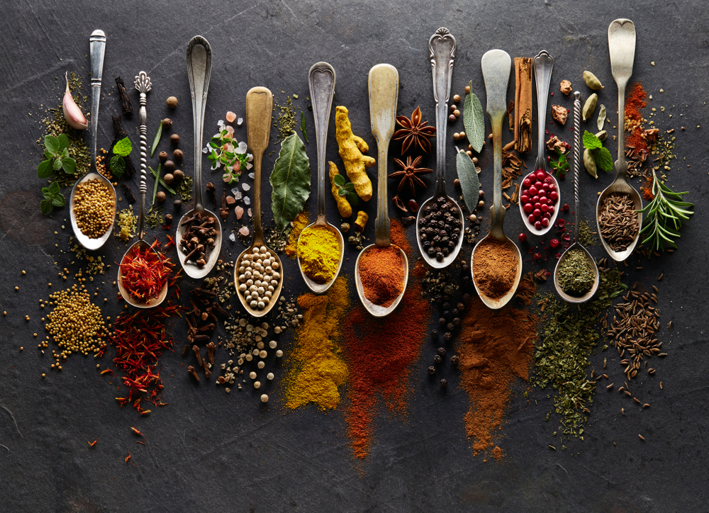
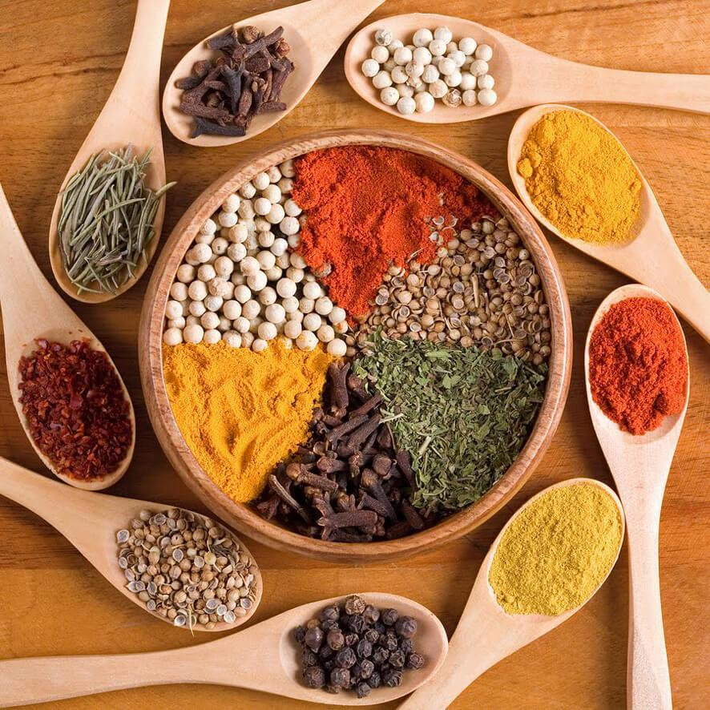
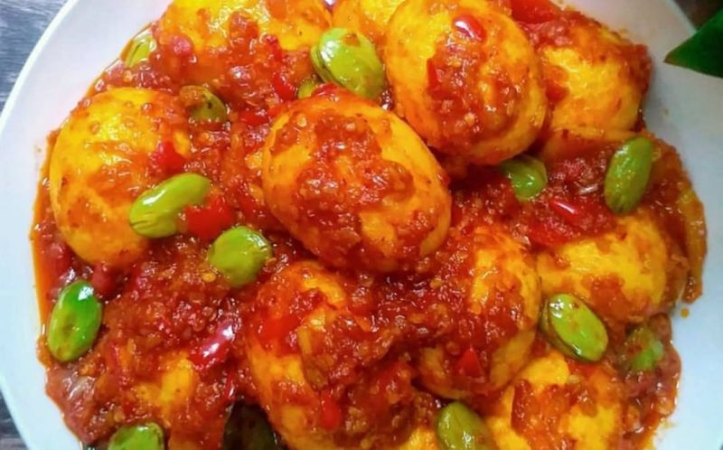
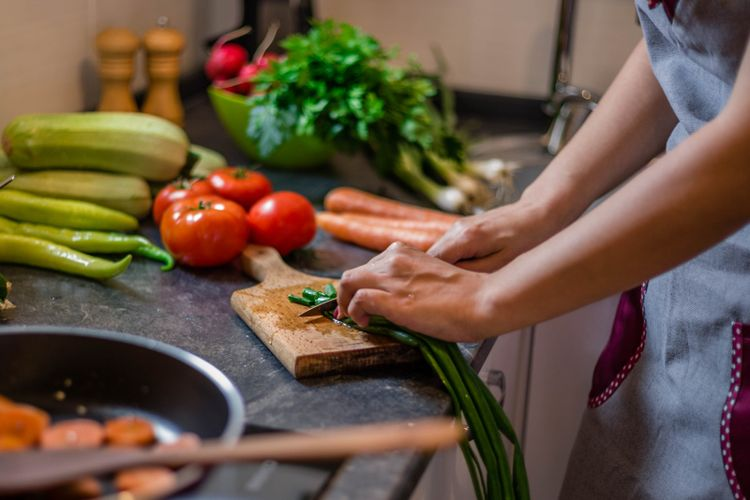
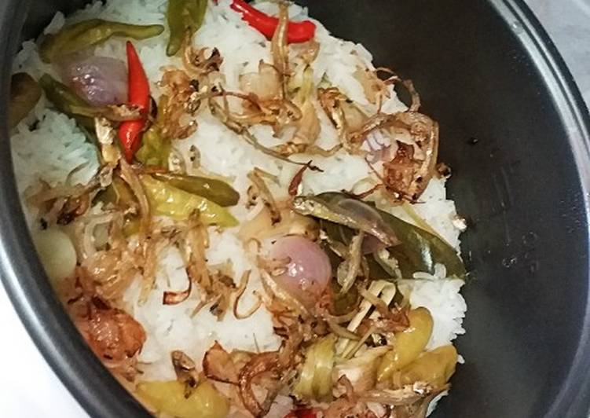
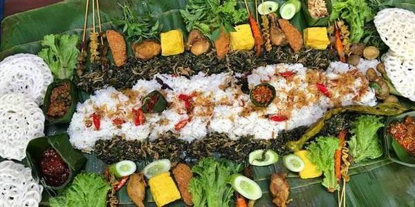

INFORMASI
sedikit tentang cara memasak dengan enak kuncinya yaitu pada rempah-rempah,bumbu/penyedap terutama pada cara memasak nya ya gyus



|

Memasak adalah kegiatan menyiapkan makanan untuk disantap dengan cara memanaskan/mengasakan bahan makanan atau bumbu-bumbu tertentu dan di lengkap dengan rempah-rempah untuk melezatkan masakan yang dihidangkan
TUTORIAL
Sebelum kita memasak kita perlu bahan dan alat yang dibutukan contoh kita akan membuat NASI LIWET! ya Nasi liwet siapa yang gak kenal di negara indonesia ini dengan khas sunda yang sudah melekat di masyarakat dengan perpaduan rempah-rempah yang alami dan aroma yang lezat... OKE JANGAN BANYAK BACOT GYAS KITA GAS AJAH

BAHAN-BAHAN
1.Sereh
2.Daun salam
3.Bawang merah
4.Bawang daun
5.Tomat
6.Nasi
7.Minyak kelapa
8.Bumbu/Penyedap makanan
9.Cabe merah
ALAT-ALAT
1.Mejikom
2.Pisau
3.Wajan
LANGKAH-LANGKAH
1.Cucilah rempah-rempah(sereh,bawang merah,bawang daun,cabe,tomat,daun salam)
2.Setelah itu potonglah bawang merah,bawang daun,tomat,dan cabe nya sesuai selera kamu
3.Masukkan beras ke mejikom,lalu cuci
4.Setelah di cuci masukkan air kurang lebih 6cm(sesuaikan dengan beras)
5.Masukkan rempah2 yang tadi dipotong-potong
6.Masukkan sereh,daun salam,minyak(5sndk),dan bumbu penyedap sesuai selera anda
7.Lalu aduk sampe merata
8.Setelah di aduk masukkan ke wadah mejikom lalu nyalakan ke cook tunggu sampe matang

9.JADI DAH SELAMAT MENCOBA TAMBAHKAN JUGA LAUK BUAT PENYEMPURNA NASI LIWET SEPERTI YANG DI ATAS
|